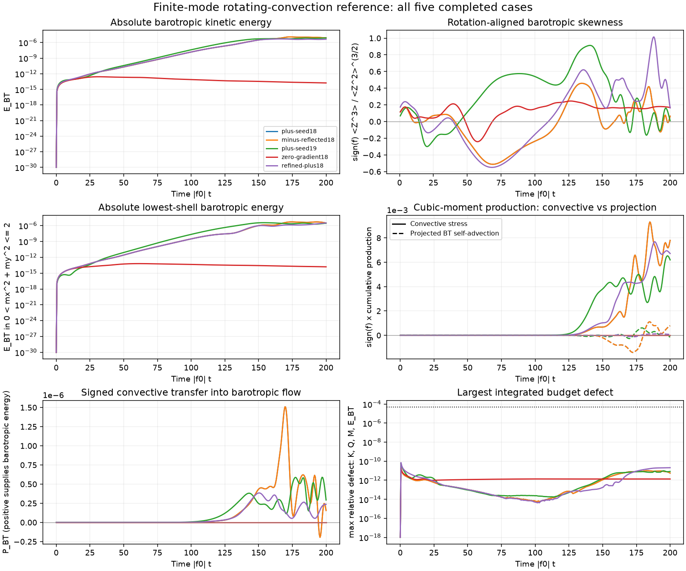

Fully coupled nonlinear Galerkin convection
Completed finite-mode reference tests · dimensionless time 0–200
All 5 declared cases completed through |f0|t=200. These are finite-mode, fixed-temperature rotating Boussinesq experiments, not the capped Breeze atmosphere.
The movies show actual reconstructed vertical vorticity above buoyancy perturbation at three saved heights. There is no passive tracer. Each field has one common symmetric asinh scale across all cases, times and depths.
Over the final quarter, rotation-aligned barotropic skewness averaged 0.08286 for seed A and 0.146 for seed B. Positive aligned skewness means a cyclonic statistical bias; it does not establish a single persistent vortex.
The nested extension's final-quarter aligned skewness was 0.4421; its mean power into the barotropic flow was 2.037e-07. This comparison is a truncation-sensitivity check, not a converged DNS result.
The largest recorded integrated relative budget defect was 7.06e-11 across kinetic energy, thermal variance, potential moment and barotropic kinetic energy. The cubic-moment plot separates convective production from projected barotropic self-advection; the latter need not vanish in a finite Galerkin model.
The completed reflected pair's saved-field relative L2 mismatch was 1.46e-14 for vorticity and 8.01e-15 for buoyancy. Reflection reverses both f and vorticity, while preserving scalar buoyancy.
The zero-imposed-gradient control retains the same initial buoyancy perturbation and its force. It has a finite thermal reservoir and is not pure velocity-only decay.
The narrow box contains only a few critical convective wavelengths. Two seeds and one extension cannot establish a robust Jovian sign-selection mechanism or a broad inverse cascade. Absolute low-shell energy and signed stress power are provided so morphology and energy fractions are not mistaken for transfer evidence.
Transfer, sign and numerical checks

Solid cumulative-production curves: convective stress. Dashed: projected barotropic self-advection. Colors match cases in the legend. Cumulative third-moment terms use diagnostic-sample quadrature; they are not RK-stage closure tests.
| Case | Final EBT | Final low-shell EBT | Late aligned skewness | Late mean PBT |
|---|---|---|---|---|
| Convective seed A, f = +1 | 8.01e-06 | 3.165e-06 | 0.08286 | 5.142e-07 |
| Reflected seed A, f = -1 | 8.01e-06 | 3.165e-06 | 0.08286 | 5.142e-07 |
| Convective seed B, f = +1 | 7.507e-06 | 2.774e-06 | 0.146 | 3.427e-07 |
| Zero imposed gradient, seed A | 1.695e-14 | 1.572e-14 | 0.1657 | 7.925e-18 |
| Nested extension, seed A, f = +1 | 4.326e-06 | 3.175e-06 | 0.4421 | 2.037e-07 |
Convective seed A, f = +1
Cutoff Kh=4, Nv=2; G=0.00809649; three actual heights z/H=0.2, 0.5, 0.8.
Top: vertical vorticity. Bottom: buoyancy perturbation, not passive tracer. 201 frames, 12 frames/s. Open movie.
Reflected seed A, f = -1
Cutoff Kh=4, Nv=2; G=0.00809649; three actual heights z/H=0.2, 0.5, 0.8.
Top: vertical vorticity. Bottom: buoyancy perturbation, not passive tracer. 201 frames, 12 frames/s. Open movie.
Convective seed B, f = +1
Cutoff Kh=4, Nv=2; G=0.00809649; three actual heights z/H=0.2, 0.5, 0.8.
Top: vertical vorticity. Bottom: buoyancy perturbation, not passive tracer. 201 frames, 12 frames/s. Open movie.
Zero imposed gradient, seed A
Cutoff Kh=4, Nv=2; G=0; three actual heights z/H=0.2, 0.5, 0.8.
Top: vertical vorticity. Bottom: buoyancy perturbation, not passive tracer. 201 frames, 12 frames/s. Open movie.
Nested extension, seed A, f = +1
Cutoff Kh=6, Nv=3; G=0.00809649; three actual heights z/H=0.2, 0.5, 0.8.
Top: vertical vorticity. Bottom: buoyancy perturbation, not passive tracer. 201 frames, 12 frames/s. Open movie.
Scales and provenance
vorticity: full physical range [-2.032, 2.032], asinh linear width 0.002032. buoyancy_perturbation: full physical range [-0.004936, 0.004936], asinh linear width 4.936e-06.
The same mapping is fixed across all movies, times and depths; no framewise normalization or field clipping. Saved 64×64 samples are exact retained-mode reconstructions, enlarged for display. They do not imply a 64³ dynamical calculation. Each movie passed frame-count, duration and full-decode checks on Unity.
Metrics, configuration, checksums and media verification · Diagnostic figure PDF · Equations and experiment plan · Implementation · Mode-selection reference